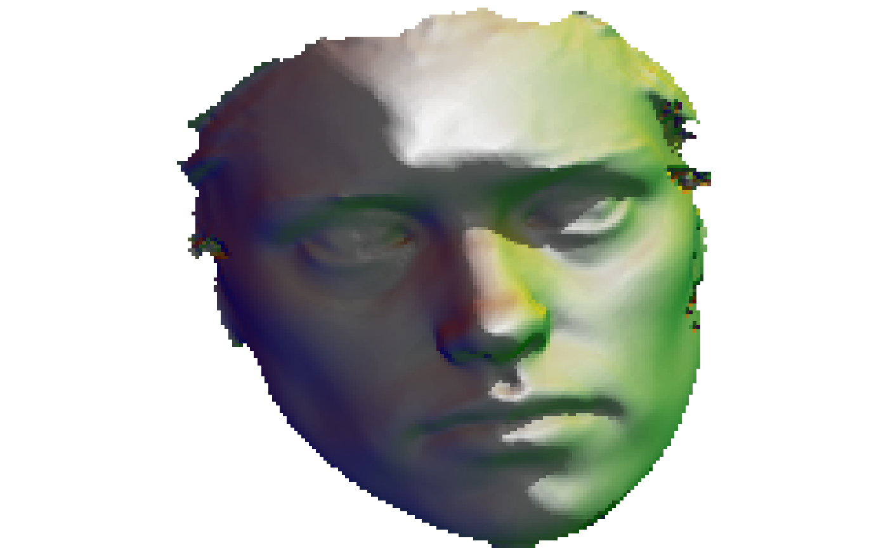

From mesh3d to rayshader
Sébastien Rochette
2019-07-24
aa-rayshader.RmdPackages
library(Rvcg)
library(mesh2ray)
library(rgdal)
#> Loading required package: sp
#> rgdal: version: 1.4-4, (SVN revision 833)
#> Geospatial Data Abstraction Library extensions to R successfully loaded
#> Loaded GDAL runtime: GDAL 2.2.2, released 2017/09/15
#> Path to GDAL shared files: /usr/share/gdal/2.2
#> GDAL binary built with GEOS: TRUE
#> Loaded PROJ.4 runtime: Rel. 4.9.2, 08 September 2015, [PJ_VERSION: 492]
#> Path to PROJ.4 shared files: (autodetected)
#> Linking to sp version: 1.3-1
library(raster)
library(rayshader)Transfrom mesh3d to raster
humface data is a mesh3d object. It is transformed as a raster object with mesh_to_raster()
Transform raster to rayshader elevation matrix
raster humface_r is extracted to be transformed as a matrix that can be used with {rayshader}.
A list is returned.
humface_ray <- stack_to_ray(humface_r)
# Rayshade raster
zscale <- 0.1
ambmat <- ambient_shade(humface_ray$elevation, zscale = zscale)
raymat <- ray_shade(humface_ray$elevation, zscale = zscale, lambert = TRUE,
sunangle = 45)
ray_image <- humface_ray$elevation %>%
sphere_shade(texture = "unicorn") %>%
add_shadow(raymat, max_darken = 0.1) %>%
add_shadow(ambmat, max_darken = 0.5)
plot_map(ray_image)
Get elevation matrix and calculate image overlay
img <- system.file("img/ThinkR_logo_500px.png", package = "mesh2ray")
humface_img <- stack_to_ray(humface_r, img)
# Rayshade raster
zscale <- 0.25
ambmat <- ambient_shade(humface_img$elevation, zscale = zscale)
raymat <- ray_shade(humface_img$elevation, zscale = zscale, lambert = TRUE)
ray_image <- humface_img$elevation %>%
sphere_shade(texture = "imhof4") %>%
add_overlay(humface_img$overlay, alphalayer = 0.99) %>% # Note overlay
add_shadow(raymat, max_darken = 0.01) %>%
add_shadow(ambmat, max_darken = 0.5) # %>%
# add_water(watermap, color = "#57B6FF")
plot_map(ray_image)